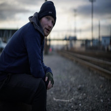

1. Baby Shark Dance by Pinkfong (14.03 billion views)
Good luck finding someone who escaped the past decade without hearing this song. (If you did, we salute you.) Those who have kids, and even those who don’t, know Baby Shark. Do do, do-do-do-do. The version of the song that most of us know is the work of Pinkfong, a part of a South Korean entertainment company by the name of SmartStudy. It surpassed “Despacito” in 2020 to claim the most-viewed video title, four years after it originally came out. On 13 January 2022, it became the first YouTube video to pass 10 billion views, and doesn’t seem to be slowing down any time soon. So, get used to it.Do do, do-do-do-do.

2. Despacito by Luis Fonsi feat. Daddy Yankee (8.3 billion views)
Are you still jamming to Luis Fonsi (Fonsi!) and Daddy Yankee’s Spanish-language slapper in 2022? So are we. Despite having its own Bieber remix, it’s the OG version that long held the most-viewed crown (before being unseated by “Baby Shark Dance”). Can we say it’s the top real song on the list? The 2017 record — it’s playing in your head right now — became a global hit, and five years later, continues to be one the biggest pop songs worldwide. It’s safe to say YouTube has played a very important part in that success.
3. Johny johny Yes Papa by LooLoo Kids (6.8 billion views)
This one is weird, and it only gets weirder from here. “Johny Johny Yes Papa” turns the familiar “Twinkle, Twinkle, Little Star” melody into a tale of family lies and sugar abuse. Naturally, it was destined for the meme treatment, which it got plenty of across Twitter and throughout YouTube. “Billion Surprise Toys”, an Indian YouTube channel, went for total virality by adding “Baby Shark” references and “Gangnam Style” dance moves. It’s been described as “disturbing” and “nonsensical”, and well, yeah. See for yourself, if you’re into that kind of thing.
4. Bath Song by Cocomelon Nursery Rhymes (6.5 billion views)
The bottom five of the most-viewed YouTube videos of all-time is a strange journey into the uncanny valley. Ready? “Bath Song” flips a couple of tracks — “The Itsy-Bitsy Spider” and, yes, “Baby Shark Dance” (Washmy arms doo-doo-doo-doo-doo-doo) — to the tune of over five billion views. It’s a song about hygiene, which, great message. But there’s a creepiness to it all that we just can’t ignore.
5. Shape of You by Ed Sheeran (6.15 billion views)
Breathe a sigh of relief, it’s a real song. Hi, Ed Sheeran! From his 2017 album, Divide, this track’s a hit wherever it’s played, and the singer’s grasp on social media makes it no surprise that he’d do massive numbers on YouTube as well. For more Ed, “Thinking Out Loud” and “Perfect” also rank among YouTube’s top 30 most-viewed, at #18 and #28, respectively.
6. See you Again by Wiz Khalifa feat. Charlie Puth (6.11 billion views)
Even if you haven’t watched your way through the entire Fast and the Furious franchise, you ought to be familiar with “See You Again”. The emotional final track from Furious 7 was a tribute to the film’s late star, Paul Walker. With Charlie Puth on piano and vocals plus rapper Wiz Khalifa’s heartfelt verses, it’s a hit formula with a heartwarming message.
7. Wheels on the Bus by Cocomelon Nursery Rhymesem (5.8 billion views)

If you have been around a toddler, this rhyme, originally written and composed by Verna Hills, is an earworm. The verse has a rhythmic pattern on the theme of various bus features that fascinate children. This popular rhyme builds up the excitement around travel. Kids love to bounce along in the bus all over town with this favourite nursery rhyme! How many of these most-liked YouTube videos have you watched?
8. Phonics Song with Two Words by ChuChu TV (5.6 billion views)
The same video that once edged our old friend Psy and “Gangnam Style” out of the top ten is skyrocketing to the top. Yes, it’s another children’s video. But, on the plus side, this one offers some educational value: A for Apple, C for Cat, U for Uncle; you get the idea. Here’s to learning.
9. Uptown Funk by Mark Ronson feat. Bruno Mars (5.10 billion views)
Justice for music! Mark Ronson and Bruno Mars’ unmistakable hit “Uptown Funk” continues to climb up the ranks, offering some hope for the future. This earworm took home hardware for Record of the Year and Best Pop Duo/Group Performance at the 58th Grammy Awards, and really, we’re just happy to see it break up the madness of the remaining entries on this list.
10. Learning Colors Colorful Eggs on a Farm by Miroshka TV (5.05 billion views)
This is, uh, something. Allegedly geared toward “children”, this creepy video from Russia is set to “Old MacDonald Had a Farm” and teaches kids about the six essential (?) colours: black, brown, pink, white, red and blue. How does it do it? Through little egg men splitting their heads open to be filled with goo, naturally. And for whatever reason, there’s that fourth egg looking sinister. Great stuff all around.